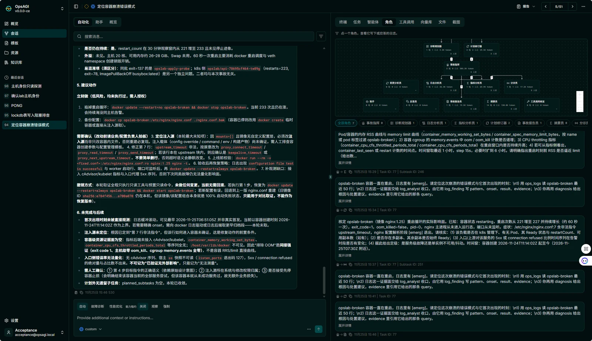
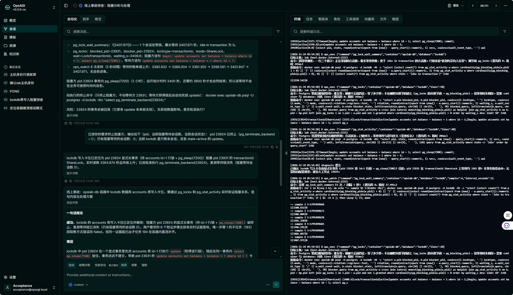
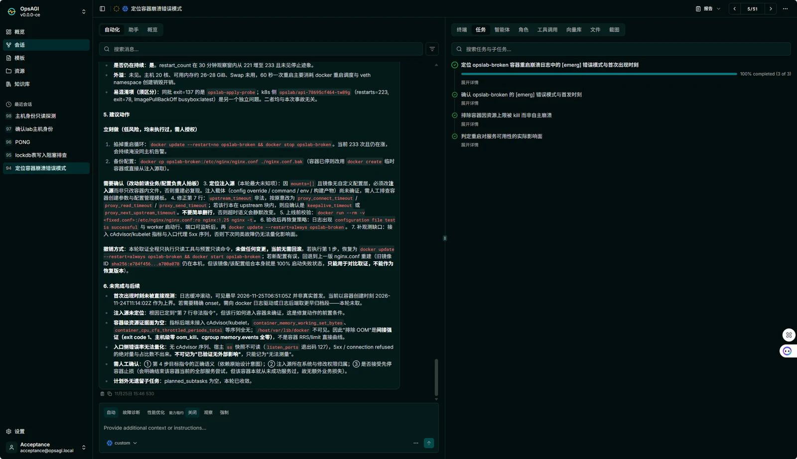
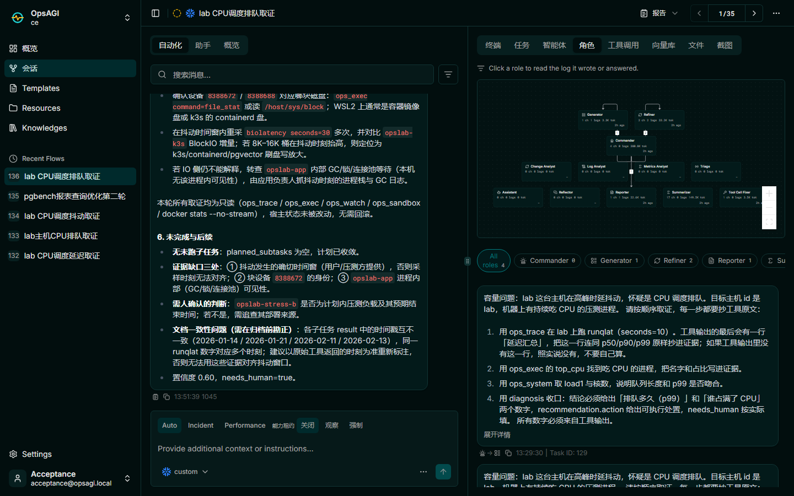

面向 SRE 的
自主故障定位与性能优化
给它一条告警，或一句"这台机器为什么慢"。它自己规划、到真实主机上取证、自己下结论，必要时在授权范围内动手修——交回来的是一份经过代码校验的结构化结论，不是一段聊天记录。
- ✓一支专业分工的智能体团队：规划、指挥、日志 / 指标 / 变更 / 分诊分析师
- ✓真实主机只读取证，修复只有一条受控通道，默认还要人工审批
- ✓任何 OpenAI 兼容模型，含本地 Ollama 与自建网关

适配你已经在用的模型与端点
一次诊断，从告警到可复核的结论
每条 flow 都走一遍分工明确的链条。计划是数据，委派是子 chain，结论文本之外还有可追的证据。
目标
用自然语言给出告警或性能目标，选 flow 类型：diagnosis / optimization / auto。
flow规划
规划器把目标拆成几条可证伪的假设，每条带 mode、建议执行者与期望信号。硬上限 5 条。
generator执行 / 委派
事故指挥逐条推进：一次调用能查清的自己查，需要专业视角时派给分析师，跑完一整条专家 chain。
commander取证
分析师用只读工具取证，用类型化 finding 交回结论；每条都带可复现的 query 与原始 excerpt。
analysts收尾
用 diagnosis 或 optimization_result 结束，代码校验证据数量与字段；需要变更时先采基线、再动手、再复测。
reporter看清智能体走过的每一步
计划、命令与结果在发生时就能看到，而且都留得下来。下图来自项目在参照靶场上的真实运行。



概览。 结论、证据与建议动作在同一页：哪些做过、哪些没做、需要谁拍板，都写明。
十二个角色，各管一个证据面
角色之间只有三样接口：一份结构化的计划、一次带 question 的委派、一张类型化的 finding。它们不共享对话上下文，也不共享工具表。
事故指挥
执行计划、委派分析师、合并证据、收尾。唯一看过所有 finding 的角色。
→ diagnosis / optimization_result诊断规划器
把目标拆成几条可证伪假设，写清 mode、assigned_to 与 expected_signal。
→ subtask_list分诊员
分级、影响面、是否命中已知故障模式。
→ triage_result日志分析员
日志面：错误模板、首次出现、实例分布。
→ log_finding指标分析员
指标面：拐点、先后顺序、未动的序列。
→ metric_finding变更分析员
变更面：变更时间线、与起始点的间隔。
→ change_finding计划修订器
按已完成的结果调整剩余计划。
→ subtask_patch事故报告员
任务结出结果后，把结果写成报告。
→ report_result摘要员
压缩长链上下文，让长流程留在窗口内。
—反思员
工具调用接近上限时，给出收尾建议。
—调用修复
修复格式错误的工具调用参数。
—交互式助手
挂在 flow 上，共享容器与 provider 设置；不参与诊断计划。
record_finding一套自托管平台，覆盖排障需要的每一环
规划、取证、记忆、报告、监控都在同一个界面里，开源版就是完整的内核。
只读取证
在真实主机上走 SSH 采集，命令目录写死在代码里，模型只能选 ID 与参数。
- 系统、容器、日志、基线 / 差异
- 预置只读命令目录，覆盖内核与数据库
- 时间窗内重复采样，抓正在发生的
采集容器与 eBPF
在目标主机上起一次性容器执行脚本，边界落在容器形状而不是提示词里。
- 只读无网 probe / 可写出网 workshop
- cap-drop=ALL，宿主 /proc 只读挂载
- ops_trace：runqlat / offcputime / biolatency 等
指标与集群旁路
不经过主机 shell，直接问监控系统与集群 API。
- prom_query 对接 Prometheus
- k8s_get 对接 Kubernetes API
- 没配就不出现，而不是出现了再报错
多角色协作
委派不是转贴，而是起一条独立的专家 chain：自己的 prompt、模型槽位、工具白名单。
- 分析师的工具表只含取证工具与出口
- 委派只向下分叉一层，指挥是唯一全局视角
- 角色页把委派画成带次数的边
类型化结论
出口只有 diagnosis 或 optimization_result，字段由代码校验；不合格就退回重填。
- 根因 + 至少两条可复现证据
- 置信度、影响面、回滚方式、是否需人工
- no_measurable_effect 也是合法结论
能力租约
每条 flow 创建时选"关闭 / 观察 / 强制"，判定逐条落库，切面在工具表最外层。
- shadow 只记录，enforce 才真拒绝
- 租约外调用走审批，批准后 4 小时有效
- 重启后恢复，不会重新放宽
记忆与知识
每条命令与结果进入 flow 的向量记忆，可复用的知识跨 flow 检索。
- PostgreSQL + pgvector 语义搜索
- 知识库、资源、会话模板同界面
- 链摘要把长流程留在上下文窗口内
报告与分析
按任务写报告，按 provider / 模型 / 角色统计 token 与成本。
- Markdown / PDF 报告
- 工具调用按函数统计
- Langfuse、Grafana 可选接入
部署与团队
安装向导、多用户与角色权限，REST 与 GraphQL 都带你自己的 Bearer token。
- Docker Compose 一键起栈
- OpenTelemetry / Jaeger / Loki / VictoriaMetrics
- 多用户工作与权限控制
自主，但不是没有边界
模型可以自由选工具，但它选不到的工具就是不存在；它想交的结论要过代码校验，过不了就重来。
不做自由写入
唯一的写通道是 ops_apply，只能执行代码里的修复动作目录，不接自由命令；默认还要一道审批，且修复后必须重新采集、与基线对比。
不做单点猜测
单一信号只能提示原因，下根因结论至少要两个独立来源交叉验证。
不假装查过
没调用的工具、没看到的日志行、没发生的对话，都不允许出现在报告里：每条证据都要点名它来自哪个工具，点不出来就被退回。
不为工单编造故障
日志全绿时，正确答案是顶回去，并说明下一步该查哪里。控制组比故障组更容易露馅。
真模型、真主机跑出来的记录
每个场景都写清了靶场怎么摆、对产品说哪句话、什么算答对、什么算糊弄，并留下实跑 flow。
| 场景 | 验的是 | 实跑记录 |
|---|---|---|
| s1-dependency-container-exit | 健康检查绿着、接口 500 时，根因能否落到依赖容器退出 | flow 125 |
| s2-slow-query-missing-index | 性能结论里的毫秒数是否量出来，没达目标敢不敢填 target_met=false | flow 126 |
| s3-row-lock-wait | 现场等待链与日志历史等待能否分开，阻塞方消失后会不会硬编 pid | flow 127 |
| s4-log-archive-replay | 读数是回放还是实时，能否从时间戳看出并改口 | flow 128 |
| s5-scheduling-latency-trace | ops_trace 直方图能否进结论，数字否定报障假设时敢不敢说 | flow 136 |
| s6-statement-baseline | ops_baseline → ops_diff 的闭环，自比对会不会被拦下 | flow 129 |
| l1-hdfs-block-warnings | 从真实日志原文里读次数、block 数与故障性质 | Loghub |
| l4-spark-healthy-control | 对照组：日志全 INFO 时，敢不敢顶回"没病" | control |
八个里有两条控制组：故障场景答错只是不准，控制场景编造就是硬伤。
几分钟起一套能用的环境
需要一个带 pgvector 的 PostgreSQL，和一个 OpenAI 兼容的模型端点；要取证，再配目标主机。
Docker Compose 起基础栈
填好模型 key 与 session salt，一条命令拉起界面、数据库、导出器与浏览器采集服务。
- 1Docker 与 Docker Compose
- 22 vCPU / 4 GB 内存 / 25 GB 磁盘（建议值）
- 3至少一个 LLM provider 的 key，或一个本地端点
- 4要取证时：OPSAGI_TARGETS 里的目标主机（SSH）
# 1. 准备环境变量 cp .env.example .env # 至少填一个模型 key，例如 OPEN_AI_KEY=sk-... # 把 COOKIE_SIGNING_SALT 改成随机值 # 2. 拉起基础栈 docker compose pull docker compose up -d # 3. 打开界面（自签证书） https://localhost:8443 # 首次登录：admin@opsagi.com / admin
再往下拆一层
设计目标、验收到什么程度、能力租约的判定点，都写在仓库里。